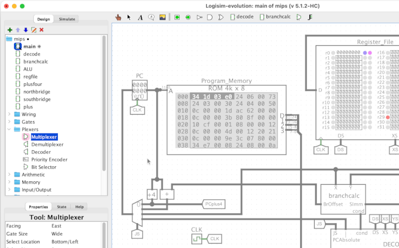

Right-click or drag items to customize toolbar for each project.
A circuit can be embedded as a sub-circuit within another, by selecting with single-click, then clicking to place it.
Tip: Go to Project > Load Library to add more libraries.
The toolbar includes most mouse tools by default. All are also visible in Project > Options when customizing the toolbar, or in mouse options when creating custom keyboard shortcuts.
| Poke Tool — interact with running simulation | |
| Edit Tool — select and move components, or draw and edit wires | |
| Wiring Tool — draw and edit wires only | |
| Wire Cutter — delete wires or cut portions of wires | |
| Text Tool — add text boxes, or edit labels on components | |
| Move Tool— move and select components only | |
| Popup Menu Tool — bring up the right-click context menu, as an alternative to right-clicking |
Logisim comes with the following built-in components, visible in the left sidebar of each project. These can also appear in the toolbar. You can add additional libraries to your project using Project > Load Library, including third-party libraries found online, and you can even write your own custom jar library or use import one project file into another to be used as a custom .circ library.
| Wiring library — Basic elements needed for most circuits | |
|---|---|
| Split/Join Signals — join signals into buses, or split busses into separate signals | |
| Input & Output Pin — input to and output from a circuit | |
| Probe — display values on wires | |
| Tunnel — make connections without drawing wires | |
| Clock — oscillates between zero and one | |
| Constant — like an input, but with a fixed value | |
| Extend/Truncate — zero-extend, sign-extend, or truncate a value | |
| Gates Library — Primitive combinational components | |
| NOT Gate — inverts a signal | |
| Buffer — does nothing, no-op | |
| AND, OR, NAND, NOR, XOR, XNOR Gates — common logic operations | |
| Odd Parity, Even Parity — parity operations | |
| Tri-state Buffer, Tri-state Inverter — gates with three possible outputs | |
| PLA — Programmable Logic Array | |
| Plexers Library — controlling and selecting groups of signals | |
| Multiplexer — select one value from of a group of wires | |
| Demultiplexer — send a value to one of a group of wires | |
| Decoder — enable one out of a group of wires | |
| Priority Encoder — check which wire among a group is enabled | |
| Bit Selector — select one bit from a bus | |
| Arithmetic Library — computing with binary numbers | |
| Adder — add binary numbers | |
| Subtractor — subtract binary numbers | |
| Multiplier — multiply binary numbers | |
| Divider — divide binary numbers | |
| Negator — negate two's complement binary numbers | |
| Comparator — compare binary numbers | |
| Shifter — shift binary patterns left or right | |
| Bit Adder — count the enabled bits in a bus value | |
| Bit Finder — search for a bit in a bus value | |
| Memory Library — storing data | |
| D, T, J-K, S-R Flip-Flops — store a single-bit | |
| Register — store multiple bits | |
| Counter — store, increment, and decrement a number | |
| Shift Register — store and shift a bit pattern | |
| Random Generator — generate random numbers | |
| RAM — random-access memory | |
| ROM — read-only memory | |
| Input/Output Library — user interaction | |
| Button — a push-button for user input | |
| DIP Switch — a row of small switches for user input | |
| LED — single-bit output as a colored light | |
| RGBLED — three-bit output as a multi-colored light | |
| 7-Segment Display — display numbers or patterns | |
| Hex Digit Display — display 4-bit data as a hex digit | |
| Meter — displays a value on a analog-style meter or dial gauge | |
| Slider — user input using a linear or log-scale slider | |
| Dial — user input using a linear or log-scale dial | |
| Dial — output to an oscilloscope-style display | |
| Joystick — arcade-style joystick for x,y user input | |
| Keyboard — ascii text user input | |
| TTY — display ascii text | |
| Port I/O — bi-directional input/output (useful for FPGAs) | |
| File Viewer — display lines from a file | |
| Slideshow — chooses and displays an image depending on a control signal | |
| LED Matrix — a grid of 1-bit lights | |
| RGB Video — full-color video output | |
| Analog Library — simplistic non-digital components | |
| Power, Ground — signal source and sink | |
| Transistor — simplified PNP and NPN transistors | |
| Transmission Gate — block or transmit a signal | |
| Pull Resistor — weakly pull signal to a default value | |
| Audio Library — digital audio | |
| Octave — a simulated piano keyboard for generating audio | |
| PCM Sink — converts circuit-generated PCM data to audio output | |
| MIDI Sink — converts circuit-generated MIDI data to audio output | |
| MIDI Input — connects an external source of MIDI data to a Logisim circuit | |
| Saturating Adder — addition using scaled, saturating, or normalized arithmetic | |
| Saturating Subtraction — subtraction using scaled, saturating, or normalized arithmetic | |
| Saturating Negator — negation using scaled, saturating, or normalized arithmetic | |
| Saturating Multiplier — multiplication using scaled, saturating, or normalized arithmetic | |
| Saturating Divider — division using scaled, saturating, or normalized arithmetic | |
| Requantizer — scale and normalize values | |
| Linear Map — shift values between preset ranges | |
| Scaled Math & Trig — evaluate mathematicaal and trigonometric expressions with scaled arithmetic | |
| Line Select — select or mix values from among multiple inputs | |
| BFH mega functions — miscellaneous advanced components | |
| Dynamic Clock Control — control FPGA clock speed dynamically | |
| Bin2BCD — binary to binary-coded-decimal conveter | |
| BCD2SevenSegment — 4-bit binary-coded-decimal to seven-segment adapter | |
| Hex2SevenSegment — 4-bit hex to seven-segment adapter | |
| External I/O — a portal to the world outside the simulation | |
| Serial Input — get realtime data from USB and other serial devices | |
| Http Input — get realtime data from the web | |
| Real Time Clock — get realtime time and date data | |
| Decor Library — decorative elements | |
| Plain & Styled Comment — add text blocks to comment a circuit | |
| Callout Tool — add callouts for highlighting specific features of a circuit | |
| Image Tool — add images to document your circuit | |
| Hyperlink — add a button linking to a web page | |